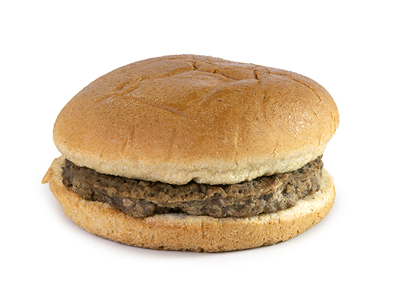

burger

Description
This recipe instructs how to make a tasty burger.
It will remind you of your childhood school lunch.
Here are the things you will need for making the burger.
- 2 large wheat buns
- 1 large fully cooked meat patty
- pickle relish
- an onion
- ketchup
- ranch
steps to make the burger:
- take one meat patty out and onto a plate
- add a spoon of the pickle relish to the bottom bun.
- wrap the patty with plastic wrap
- cut a slice of onion to about 2mm thin
- place the slice of onion on the bottom bun
- heat the patty in the microwave until it is hot
- take the plastic wrap off of the patty
- place the patty on the bottom bun
- add a tablespoon of ketchup on top of the patty
- add a tablespoon of ranch on top of the patty.
- mix and spread the sauce (optional)
- put the top bun over the sauce